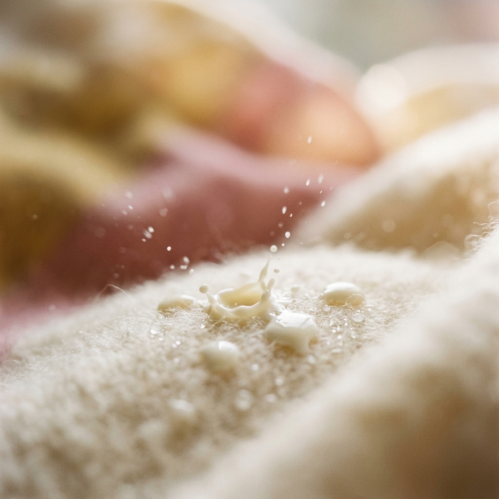

Chương 4: Phản Xạ Xuống Sữa & Xử Lý Đau Vú Hậu Sản

📖 Trang 15 - 17 • ⏱️ Thời gian đọc: ~5 phút • 🏷️ Độ khó: Nâng cao (Advanced)
Tóm tắt trong một câu: Làm chủ phản xạ xuống sữa thông qua trạng thái tâm lý thư giãn và nắm rõ quy trình xử lý cơ học khoa học đối với tắc tia sữa, viêm ngực là chìa khóa bảo vệ bầu ngực mẹ và duy trì dòng sữa chảy trơn tru. Ch 4, p. 15-17
🔍 Bối cảnh (The Setup):
Sự đau đớn dữ dội của mẹ sữa khi bị nghẹt tuyến sữa và viêm ngực, thường bị xử lý sai lầm bởi các mẹo dân gian bạo lực (như nặn bóp cực mạnh gây tổn thương mô vú, hoặc chườm nóng liên tục làm sưng nề thêm).
💡 Luận điểm chính (The Argument):
Dòng sữa chỉ chảy tốt khi mẹ thư giãn (vì Oxytocin phụ thuộc cảm xúc). Các bệnh lý vú hậu sản đều bắt nguồn từ hiện tượng ứ sữa; giải pháp cốt lõi là giải phóng sữa nhẹ nhàng và chống sưng viêm, tuyệt đối không dùng lực cơ học mạnh.
📊 Bằng chứng hỗ trợ (The Evidence):
Cơ chế tiết sữa Oxytocin (rần rần bầu ngực, sữa nhểu bên vú đối diện); phân biệt tắc tia sữa (nổi khối u, đỏ mềm, sốt nhẹ) với viêm ngực (sốt cao, ớn lạnh, đau nhức toàn thân như bị cúm); khuyến cáo đi khám y khoa khẩn cấp. Ch 4, p. 15-17
🚀 Hệ quả thực tế (The Implications):
Mẹ cần tạo môi trường yên tĩnh, nhìn ảnh con khi bú để kích thích xuống sữa. Khi bị tắc sữa: chườm ấm trước bú để kích sữa chảy, chườm lạnh sau bú để giảm sưng viêm, vuốt massage rất nhẹ nhàng hướng về đầu ti.
⚖️ Điểm tranh biện (The Controversy):
Xung đột gay gắt giữa phương pháp "vắt thông tắc cơ học dùng lực mạnh" của các dịch vụ thông sữa dân gian (gây dập nát nang sữa) với phác đồ y khoa hiện đại của Hiệp hội Y học Sữa mẹ (ABM Protocol - ưu tiên chườm lạnh, chống viêm Ibuprofen và massage vuốt nhẹ hệ bạch huyết).
🔗 Mối liên kết (The Connection):
Khả năng thông suốt dòng sữa và cơ chế phản xạ xuống sữa ở chương này là tiền đề bắt buộc để học kỹ thuật vắt sữa bằng tay hoặc bằng máy hút sữa ở chương tiếp theo.
• Vai trò của Oxytocin (Hormone tình yêu): Được sản xuất bởi vùng dưới đồi và giải phóng qua thùy sau tuyến yên. Nó kích thích sự co bóp của các tế bào cơ biểu mô (myoepithelial cells) bao quanh các nang sữa để tống sữa ra ngoài ống dẫn. Ch 4, p. 15
• Nhạy cảm với Cortisol: Cảm giác đau đớn, lo sợ hay mệt mỏi kích hoạt Cortisol ngăn chặn quá trình giải phóng Oxytocin, chặn dòng sữa chảy ra ngoài.
• Prolactin: Giải phóng qua thùy trước tuyến yên để kích thích các nang sữa tổng hợp sữa mới, hoạt động độc lập với cảm xúc của mẹ.
• Quan niệm cũ (Mẹo dân gian): Coi tắc tia sữa là do "cục sữa đông cứng", yêu cầu massage bóp mạnh bằng lực để "đánh tan cục sữa", chườm nóng liên tục và hút sữa cạn kiệt lực mạnh.
• Phát hiện khoa học mới (Phác đồ ABM): Tắc sữa thực chất là do ống dẫn sữa bị thu hẹp do sưng nề (congestion) của các mô xung quanh ống dẫn chèn ép vào ống dẫn. Nhào nặn mạnh bạo sẽ gây chấn thương mô vú, làm nứt nang sữa và đẩy nhanh tiến trình thành viêm ngực nhiễm khuẩn.
• Phác đồ ABM khuyến nghị: Chườm lạnh giảm sưng, dùng kháng viêm nhẹ (Ibuprofen), massage hệ bạch huyết cực nhẹ nhàng hướng về phía nách để tiêu dịch phù nề, tránh hút sữa quá mức.
Viêm ngực là tình trạng viêm ở mô kẽ (mô liên kết bao quanh ống dẫn sữa), không phải nhiễm khuẩn trực tiếp trong lòng ống sữa. Do đó, sữa mẹ từ bầu ngực bị viêm vẫn hoàn toàn sạch, an toàn và chứa lượng lớn kháng thể bảo vệ bé. Tuyệt đối không cai sữa hay ngừng cho con bú bên ngực viêm, vì ngừng bú đột ngột là nguyên nhân chính dẫn đến ứ sữa trầm trọng hơn, tiến triển thành áp xe vú bắt buộc phải trích rạch phẫu thuật. Ch 4, p. 16
• Quan điểm chủ đạo: Xem tắc tia sữa là hiện tượng cơ học do "cục sữa đông cứng" chặn ống dẫn. Yêu cầu dùng lực tay, máy massage hoặc chải lược đè ép thật mạnh trực tiếp lên khối u để "đánh tan cục sữa".
• Cơ sở thực tế: Kinh nghiệm dân gian lưu truyền và các dịch vụ thông tắc tia sữa tự phát không có chứng chỉ y khoa sản phụ khoa.
• Ưu điểm: Có thể đẩy bật cặn sữa bít tắc đầu ti ra ngoài tức thời trong một số ít trường hợp tắc nông đơn giản.
• Tác hại nghiêm trọng: Gây đau đớn cùng cực cho người mẹ. Làm dập nát các nang sữa mỏng manh, rách mạch máu tạo vết bầm tím, gây sưng phù nề nặng nề hơn và đẩy nhanh biến chứng áp xe mô kẽ nhiễm khuẩn phải phẫu thuật trích rạch.
• Quan điểm chủ đạo: Định nghĩa tắc sữa là hiện tượng ống dẫn sữa bị hẹp lại do các mô xung quanh bị sưng nề (congestion). Giải pháp cốt lõi là chườm lạnh giảm sưng, dùng kháng viêm Ibuprofen và massage hệ bạch huyết hướng về nách siêu nhẹ nhàng.
• Cơ sở khoa học: Nghiên cứu giải phẫu tuyến vú động và phác đồ lâm sàng chính thức của Hiệp hội Y học Sữa mẹ quốc tế (Academy of Breastfeeding Medicine).
• Ưu điểm: Hoàn toàn không gây đau đớn cho người mẹ, bảo vệ tính toàn vẹn của mô vú và ống dẫn sữa, giảm tỷ lệ biến chứng áp xe về gần mức 0%.
• Hạn chế: Nguồn sữa cần 24 - 48 giờ để hồi phục sưng nề tự nhiên dưới tác dụng của thuốc kháng viêm, đòi hỏi mẹ phải kiên nhẫn.
Tuyệt đối từ bỏ các phương pháp bóp nặn thô bạo. Bầu ngực đang tắc sữa đang ở trạng thái tổn thương viêm nề. Hãy áp dụng **phác đồ ABM**: Chườm lạnh giảm sưng + Kháng viêm NSAIDs (Ibuprofen) + Massage hệ bạch huyết lướt nhẹ trên da hướng về nách + Cho con bú trực tiếp đúng khớp ngậm. Chỉ sử dụng kháng sinh nếu có chỉ định của bác sĩ khi xuất hiện sốt cao nhiễm khuẩn.
• Chỉ trích: Hướng dẫn của sách chưa làm nổi bật tốc độ tiến triển cực nhanh của viêm ngực nhiễm khuẩn sang áp xe vú hóa mủ (chỉ trong vòng 24 - 48 giờ). Ch 4, p. 16
• Hậu quả chậm trễ: Việc lạm dụng các biện pháp tự chữa tại nhà (massage, chườm lạnh) khi đã có sốt cao ớn lạnh có thể làm trì hoãn việc dùng kháng sinh, dẫn đến hình thành ổ áp xe.
• Biến chứng ngoại khoa: Khi áp xe hình thành, việc cho con bú trực tiếp bắt buộc phải dừng lại ở ngực đó; mẹ phải trải qua thủ thuật chọc hút mủ dưới siêu âm hoặc rạch tháo mủ, để lại sẹo xơ hóa mô vú.
• Chỉ trích: Lời khuyên "xoa nhè nhẹ từ vùng bị đau ra đầu vú" Ch 4, p. 16 mang tính cảm quan cao, dễ khiến người đọc hiểu sai mức độ lực cần thiết.
• Rủi ro tự thực hiện: Do ngực đang đau cứng, bầu ngực mẹ có xu hướng phản ứng co thắt cơ. Nếu mẹ dùng lực ngón tay ấn miết (dù nghĩ là nhẹ), lực đó vẫn quá mạnh đối với hệ mạch bạch huyết dưới da.
• Định lượng chuẩn xác: Y học hiện đại định nghĩa lực massage bạch huyết chỉ nhẹ như lực vuốt ve da mặt hoặc vuốt ve một chú mèo con, massage hướng từ núm vú về phía nách để dịch viêm thoát đi, chứ không phải xoa bóp trực tiếp lên u cứng hướng ra ngoài đầu ti.
Khuyên người mẹ "giữ tinh thần thoải mái, ổn định" để kích sữa Ch 4, p. 15 khi họ đang bị những cơn đau đầu ti như kim châm hành hạ là thiếu tính đồng cảm thực tế. Khoa học hiện đại khuyến nghị người mẹ không nên chịu đựng cơn đau một cách chịu đựng. Hãy chủ động sử dụng các thuốc giảm đau an toàn cho con bú như Ibuprofen hoặc Paracetamol để cắt đứt luồng tín hiệu đau truyền lên não, từ đó não mới có thể thư giãn và giải phóng Oxytocin tự nhiên giúp sữa chảy tốt hơn. Ch 4, p. 15
Đảm bảo bạn nắm vững các kiến thức sau trước khi chuyển sang kỹ thuật vắt sữa:
• Level 1 & 2: Nhớ & Hiểu
Phản xạ xuống sữa Oxytocin hoạt động như thế nào và tại sao tiếng khóc của con có thể kích hoạt nó? Phân biệt triệu chứng sốt và biểu hiện toàn thân giữa tắc tia sữa và viêm ngực. Ch 4, p. 15, 16
• Level 3 & 4: Áp dụng & Phân tích
Nếu bầu ngực xuất hiện một u cứng đỏ sưng sau cữ bú, bạn sẽ tiến hành những bước sơ cứu cơ học nào trong 24 giờ đầu? Tại sao dùng lực nặn bóp mạnh trực tiếp lên khối u lại phản khoa học? Ch 4, p. 16
• Level 5 & 6: Đánh giá & Sáng tạo
Đánh giá mức độ an toàn của sữa mẹ từ bầu ngực bị viêm ngực (mastitis) khi mẹ đang điều trị kháng sinh. Tại sao việc tiếp tục cho bú bên ngực viêm lại là phương án bảo tồn nguồn sữa tốt nhất? Ch 4, p. 16
"Nỗi sợ hãi và cự tuyệt sử dụng thuốc giảm đau/kháng viêm (như Ibuprofen) khi ngực đau buốt xuất phát từ sự lo ngại y khoa thực tế hay từ mặc cảm tội lỗi của một 'người mẹ phải chịu đau đớn hy sinh tuyệt đối vì con'?" Ch 4, p. 12, 16
"Khi cơn đau tắc sữa làm bạn khóc nghẹn mỗi cữ bú, bạn có đang nhìn nhận cơ thể mình như một 'công cụ tạo sữa' bị lỗi, thay vì yêu thương và nâng niu nó như một cơ thể đang trong giai đoạn chữa lành?" Ch 4, p. 2, 9
"Làm thế nào để bạn thương lượng với nỗi sợ của bản thân để bình tĩnh tìm kiếm sự trợ giúp chuyên môn, thay vì chọn cách cai sữa đột ngột trong sự hoảng loạn và kiệt quệ tinh thần?" Ch 4, p. 16, 17